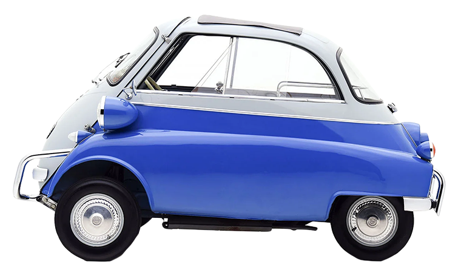

Isetta - The first bubble car
The idea for the car came from Italian refrigerator building company Iso SpA. In the 1950s, they were also building motor-scooters and three-wheeled trucks. Company owner Renzo Rivolta put engineers Ermenegildo Preti and Pierluigi Raggi in charge of designing a car that used a motorcycle engine.
The car became popular as soon as it was introduced in 1953. Named Isetta, the vehicle was unlike anything that had been seen before. It was egg-shaped and had bubble-type windows, which gave rise to the bubble car. The front end of the car hinged outwards, not unlike a refrigerator door. In the event of a crash, the driver and passenger would have needed to exit through the canvas sunroof. The steering wheel swung out with the door, granting easier access to the single bench seat. The Isetta also came with an optional heater and ventilation came through the sunroof.
The Isetta featured a 236 cc two-stroke motorbike engine, which made the car faster than you’d assume. In 1954, Iso entered several Isettas into the Mille Miglia and they took the top three spots in economy classification. Over 1000 miles the drivers hit a maximum speed of 43 mph. The car proved to be popular enough that several variants were made for different markets. They include the VELAM Isetta, Romi-Isetta and BMW Isetta.
